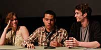
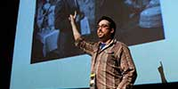
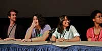

| mission meet the staff travel after party awards faq contact us |

| pressroom photo gallery |

| volunteer sponsors |

2012:
My Name Is Khan, and I am Not a Terrorist: How My Name Is Khan Defies Muslim Stereotypes in Popular Hindu Cinema
Olivia Simmons
University of North Carolina Wilmington
This essay sheds light on the history behind the common portrayal (or lack thereof) of non-Hindu “others” (particularly Muslims) in Bollywood Cinema and examines how the Karan Johar’s hit film My Name is Khan (2010) breaks the norm of these often offensive representations.
Where are they now: Simmons is in her final year at UNCW. She spent the summer interning in the office of Morgan Freeman’s and Lori McCreary’s production company, Revelations Entertainment.
LinkedIn Account
Touki Bouki: Djibril Diop Mambety and the Postcolonial Aesthetic
Michael Daye
University College Falmouth, United Kingdom
Daye defines traits of a post-colonialist aesthetic through analysis of Mambety’s Senegalese film Touki Bouki (1937) by exploring particular motifs within the film in the context of Third Cinema.
Where are they now: Daye has been encouraged to publish his senior dissertation focusing on the work of David Lynch. He hopes to attain his MA from the Slade School of Fine Art.
LinkedIn Account
War and Poetry: The Use of Genre Violence and Poetic Digression in The Thin Red Line
Jacob Mertens
University of North Carolina Wilmington
Mertens argues that The Thin Red Line (1998) challenges viewers to integrate the war genre and poetic segments into a holistic understanding of the narrative, allowing the film’s conventional war segments to transcend their base violence, engendering a feeling of beauty and existential depth.
Where are they now: Mertens is a writer for the internationally distributed journal and online resource, In the Field. This Film International journal aims to “bridge the gap between the academy and the outside world” all the while encouraging participation from various scholars.
LinkedIn Account
Repressed Tension in Haute Tension
Zulma Y. Terrones
University of Chicago
Terrones dissects the horror genre’s established gender conventions and how these become complicated when a female murderer replaces the traditional male killer. The discussion further examines how the genre relies on an unbalanced power relationship, where male superiority and female passivity parallels the repressed woman’s status of the patriarchal society that critiques it.
Where are they now: Terrones works as a Marketing Coordinator at Speedpro Lake County in Chicago, Illinois
LinkedIn Account
Robert Siodmak: His Career and Contributions to Film Noir
Gregory Baker
North Carolina School of the Arts
Baker explores Siodmak’s career from UFA through Hollywood and beyond, uncovering important influences on his directorial style and examining how that style benefited Siodmak’s considerable body of work in film noir.
Where are they now: Baker is currently a professional screenwriter under contract for a sci-fi/action film. He is also working on new feature screenplays as well as an independently produced television series set to debut in 2013.
LinkedIn Account
Bruce Conner Knows That Girls Just Want to Have Fun: Humanist Sexual Liberation in Avant Garde Film
William Frasca
University of North Carolina Wilmington
Frasca takes a look at three avant-garde films by Bruce Connor–-Cosmic Ray (1961), Breakaway (1966) and Marilyn Times Five (1973)–-and how these powerful combinations of pop music and film challenge taboos and cultural norms of female sexuality.
Where are they now: Freseca currently works as a Research Assistant/ Media Director at Copely Investment Management in Wilmington, North Carolina.
LinkedIn Account
Action Stars Who Don’t Get Any Action: Hong Kong Actors in U.S. Roles
Javi Zubizarreta
University of Notre Dame
The Eastern philosophical view of masculinity and its influence on Hong Kong cinema are examined and compared to Hollywood ideals of masculinity to offer a cross-cultural explanation for the continued emasculation of Asian male actors. A feminist critique is also used to further the reasoning behind the degradation of Asian manhood in Hong Kong and American films.
Where are they now: Zubizarreta has continued to research the “depiction of nationalism, terrorism, and violence in film by Basque and Irish filmmakers in hopes of finding constructive means of national expression.” His latest work includes videos that he wrote and directed to promote the North American Basque Organizations.
Personal Website
LinkedIn Account
Illegal Celluloid: An Investigation of American Pornography, the American Avant-Garde, and Their Crucial Intersections in the 1960s and 1970s
Royce Marcus
University of North Carolina at Wilmington
Marcus provides a closer look at the evolving relationship between pornography and avant-garde cinema throughout the 60s and 70s, exploring how these two genres ultimately influenced and supported one another in the face of constant judicial scrutiny and public criticism in America.
Where are they now: Marcus was a presenter at the 2012 PCA/ACA (Pop Culture Association/American Culture Association) Conference. He is also creating a music video for the band LIBRARIES.
LinkedIn Account
To report a problem with site functionality, please contact the webmaster.
Copyright 2012 Visions Film Festival & Conference